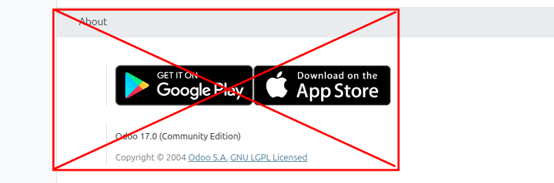

Web Custom Branding
This module allows you to fully customize Odoo branding elements for a complete
white-label experience. Remove all Odoo references and replace them with your own brand.
Perfect for: Companies that want to offer Odoo to their clients
under their own brand, or businesses that prefer a cleaner interface without
external references.
User Menu Customization
Clean up the user dropdown menu by hiding unnecessary Odoo-related links:
- Hides "My Odoo.com account" option
- Hides "Documentation" link
- Hides "Support" link
Login Page
- Removes "Powered by Odoo" footer text
- Clean, professional login experience
Window Title
Customize the browser tab/window title:
- Set a custom window title (replaces "Odoo")
- Configure in Settings > General > Window
PWA (Progressive Web App) NEW
Full control over the installable web app experience:
- App Name: Custom name displayed when installing the app from the browser
- PWA Icon: Replace the Odoo icon with your own logo (recommended: 512x512 PNG)
- Theme Color: Customize the browser toolbar color
- Background Color: Set the splash screen background color
Configure in Settings > General > PWA (Progressive Web App)
Settings Panel
- Hides the "About" section from General Settings
- Removes Odoo version and company information
Configuration
After installation, go to Settings > General Settings
to configure:
- Window section: Set your custom window/tab title
- PWA section: Configure app name, icon, and colors
Note: After changing PWA settings, users may need to clear their
browser cache (Ctrl+Shift+R) for the changes to take effect immediately.
Technical Information
- Version: 17.0.1.0.0
- License: LGPL-3
- Dependencies: base, web, base_setup
Screenshots

Hide Odoo from settings
Need Help?
Have questions, found a bug, or need customization?
I'm here to help you get the most out of this module.
Contact Support